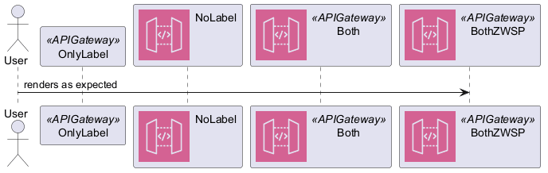

@startuml
' Copyright 2019 Amazon.com, Inc. or its affiliates. All Rights Reserved.
' SPDX-License-Identifier: CC-BY-ND-2.0 (For details, see https://github.com/awslabs/aws-icons-for-plantuml/blob/main/LICENSE)
'''AWSEntityColoring usually defined in AWSCommon.puml
!define AWS_BG_COLOR #FFFFFF
!define AWS_BORDER_COLOR #FF9900
!definelong AWSEntityColoring(stereo)
skinparam participant<<stereo>> {
BackgroundColor AWS_BG_COLOR
BorderColor AWS_BORDER_COLOR
}
!enddefinelong
'''
'The bug happens because of the AWSEntityColoring(APIGateway) from APIGateway.puml
'A workaround is to redefine to do nothing - uncomment line below to test
!define AWSEntityColoring(stereo)
'''$APIGateway and AWSEntityColoring(APIGateway) defined in ApplicationIntegration/APIGateway.puml
sprite $APIGateway [64x64/16z] {
xTC5biCm30JGiIfRqjp_lcMkqWqjUzuBvvlDjTFJ4uqlQJ5QA-1yYWCQOtNkan9IBTOotqoI4X9DvfvCIaZqi4zAIFImVrT2E-lt_bn2oxnpdAV_V2zIgG_7
D5-ASlDm_CZ-_tplDji7IIgSCSjRSP95wCLcUCF16ngzm2Rx4-S6mMC1Ktqv3G4s9r2c-We9ii98Xg1EzJmMKCgPSx9dXJagIKFb34-ddjuvPta6PDdwTP_d
-_ut3yRzOTCye9I7OvhNQcptXtxa-_n1ROmtHURP1ESYXlmPGnhJH1MWg0rvqm98ZOG-5Y6PbmHdyIf8_04xnyMpyNMkdPwU7G
}
AWSEntityColoring(APIGateway)
'''
actor User as user
participant OnlyLabel as p1 << APIGateway >>
participant NoLabel as p2 << ($APIGateway, #CC2264) >>
participant Both as p3 << ($APIGateway, #CC2264) APIGateway >>
participant BothZWSP as p4 << ($APIGateway, #CC2264) %chr(8203)APIGateway >>
user -> p4: renders as expected
@enduml